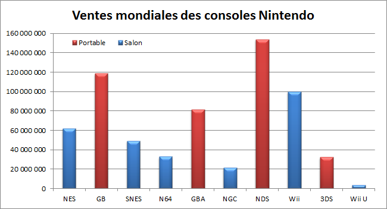

WiiU :

Description :
La console est annoncée le 7 juin 2011,
durant l'E3 2011. La Wii U est la première console de salon à proposer une manette avec un écran tactile intégré, le Wii U GamePad.

La Wii U est l'un des plus grands échecs de nintendo,
la faute à un marketing douteux, un catalogue de sortie trop faible et une concurence trop haute (PS4 et Xbox One).
Pourtant apès quelques années le catalogue de jeu s'agrandit (jusqu'à 156 jeux en France),
ces jeux étant très bons, la plupart ont été portés sur switch (en moins bien car moins puissante) :D
Jeux :

Bilan :
Malgrès sa réputation, cette console a toujours beaucoup d'avantages:
- Un prix d'occasion très faible
- Les mêmes AAA que la switch mais en meilleure qualité
- Un service en ligne gratuit
- Des fonctionnalités spécifiques au Gamepad
- PAS DE JOYCON DRIFT
- Peut lire les jeux Wii en 1080p HDMI
- Crunchyroll sans publicités ;D
- Zelda Wind Waker et Twiliight Princess HD
- Les CD ont un meilleur goût que les cartouches de switch :p
- Pas besoin d'avoir une console portable quand le covid empêche de sortir
- Wii Sports HD ?
- Metroid Prime 4...
(cette image est un lien)
Retour à la première page 3DS